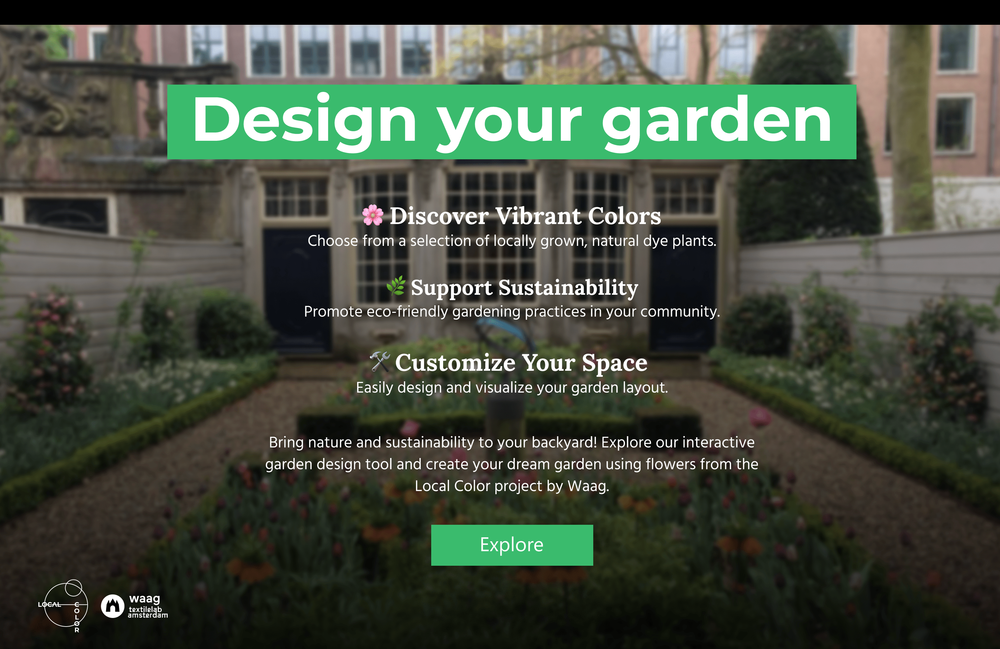
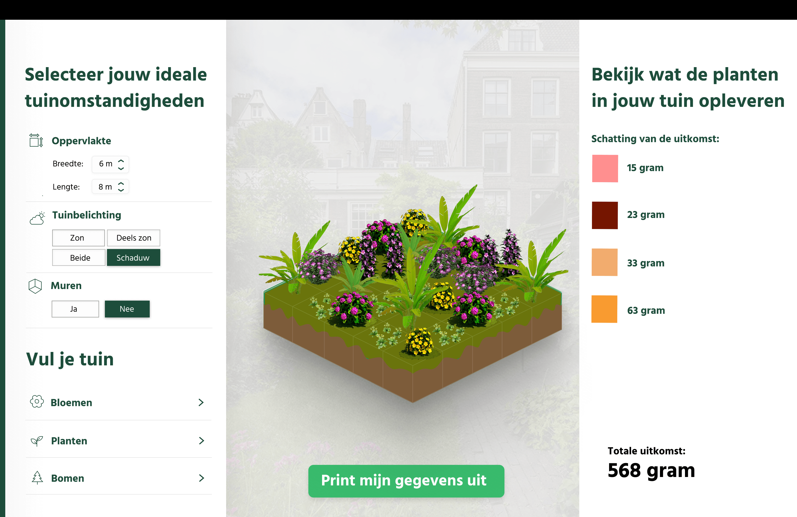

Hey! Ik ben Bink. Een Designer met een passie voor UI/UX-, motion- en graphic design. Door hard te werken en veel iteraties te maken breng ik elk project tot leven. Ik streef naar oplossingen waar gebruikers wat aan hebben en waardoor ze loyaal blijven aan jouw merk!
De Waag is bezig met een tweejarig Local Color project in Amsterdam. Hierin is hun doel om het verven van textiel op een biologische manier, een nieuw leven in te blazen. Ze gebruiken planten om de textiel te kleuren. Samen met Esther en Nicholas hebben wij een tool gemaakt voor de bewoners in Amsterdam die een tuin beheren. Het doel van onze tool is om de bewoners inzicht te geven waar de Waag mee bezig is, maar ook hoeveel planten zij in de tuin kunnen hebben en wat dit opleverd voor het kleuren van textiel.
 Meer leren over Branding, Motion Design en Graphic Design.
Tijdens Information Design heb ik geleerd om veel informatie te verwerken in een Design. Dit kan een simpel tabelletje zijn, maar ook een hele landkaart.
In mijn stage heb ik een kleurensysteem ontworpen voor HiX Zero.